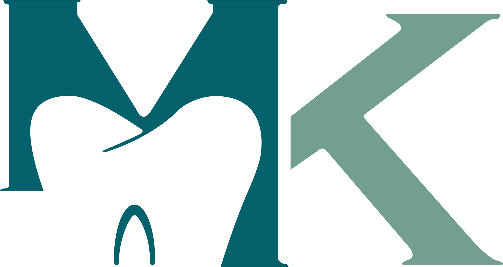
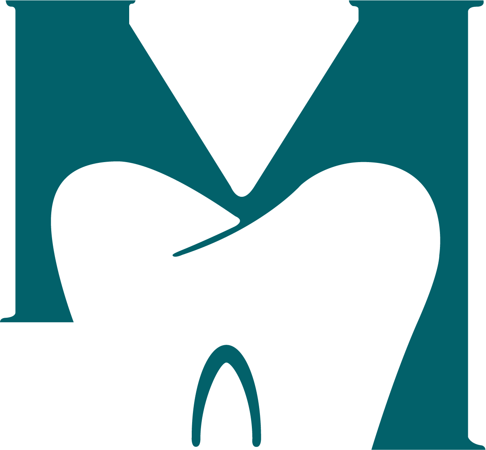

Brand guidelines
MK Smiles Dental Practice · Brooklands, Milton Keynes · A Kana Health Group practice
mksmiles.co.ukBrand guidelines · 2026

MK Smiles is a modern private practice inside Brooklands Health Centre, on the eastern edge of Milton Keynes. It cares for the whole family, from check-ups, hygiene and emergencies to Invisalign, bonding, whitening, implants and facial aesthetics.
Patients here are mostly young professionals and families in new-build Brooklands, Broughton and Atterbury. They research before they book, and they want a dentist who explains things, fits around work and school, and never rushes them.

A tooth-shaped M beside a Sage K, Smiles set wide beneath, then the Kana Health Group crown and rule over DENTAL PRACTICE in Gold.
Clear space on every side equals the height of the crown. Minimum width is 120px on screen, 30mm in print.
The MK monogram can stand alone as an avatar or watermark. The tooth M alone is a bullet icon. Use the full-colour logo on white and the white logo on Teal or washed photography. The files are PNG only: crop from them, never redraw or retype.



Detailed dental examinationReal people, in the real practice. Team portraits at the MK Smiles reception wall, bright clean interiors, and the Brooklands Health Centre building that patients will recognise.
The catchment is young and diverse, so imagery should reflect it. Use the team by name only when the name is confirmed (Dr Gizel Pereira, pictured, is named on her scrubs).


Meta statics: a real practice photo under a Teal wash, the white logo, a Poppins headline with its Light Italic turn, tooth M list cards, the Mint button and the address strip.
Stories keep the logo and copy out of the top 250px and bottom 340px. Review proof uses the live Google count, rechecked before each batch.
